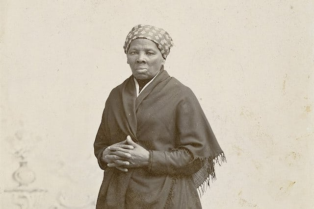

Harriet Tubman was an abolitionist from the American Civil War period who helped free numerous slaves and guide the union army to victory. She was an African American woman who was born into slavery and escaped to freedom in the north in her 20s.

Made by Varun Sammeta. Hints, use the Small menu buttons to navigate and use the large text to return home